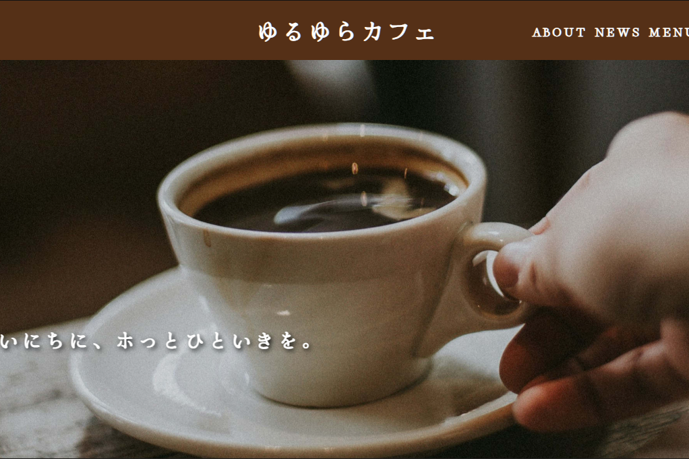
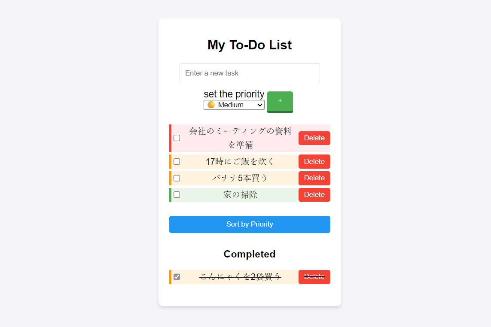

=
動きをデザインする人。
アニメーションと細部へのこだわりで使って気持ちいインターフェイスをつくります。
作品を見る

代官山にあるカフェを題材にしたビジネスサイト。 ・英語表記に切り替え可能のバイリンガル対応・スムーズなアニメーション・テンプレを使わず一から制作
おもちゃのピアノを題材にした楽器アプリ。・楽曲自動演奏機能 ・オクターブ調節機能で音階変更可能・ミュート機能、音量調整UI・なめらかなアニメーション

多機能タスクリストアプリ。・タスクに優先度 (高、中、低) を設定可能・優先度に基づいてタスクを整列可能・なめらかなアニメーション
はじめまして。渡嘉敷 諒(Ryo Tokashiki)と申します。 フロントエンドエンジニアを目指し、勉強中です。 アニメーションへのこだわりが強く、ユーザーが思わず触りたくなるインタラクティブなインターフェイスを作ることを目指しています。 現在積極的に就職先を探しています。一緒に何か作りましょう！
CONTACT
お気軽にご連絡ください。